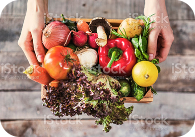
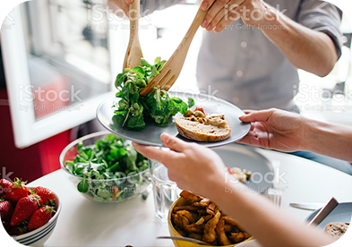
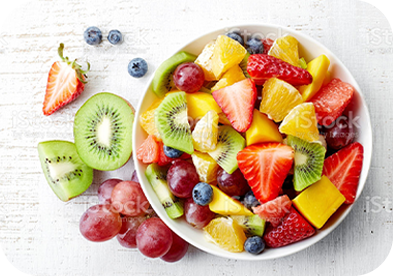

子どもが健康的に育つよう、食事には気をつけたいと日々思っています。 Colorlthyは、作り方にこだわった、国産の安全な食材が揃っているので、い つも安心して選ぶことができています。
のりさん(32歳女性)

スーパーで食材を購入していると偏りがちでしたが、Colorlthyのカタログで は食材一つ一つのこだわりを知ることができ、興味が広がります。色々な食材に挑戦して料理のバリエーションが広がり、料理が楽しくなりました!
Manamiさん(28歳女性)

家族揃ってフルーツが大好きです。Colorlthyのフルーツは、いつもみずみずしくて絶妙な甘さで最高です。みんなでテーブルを囲んでわいわいして、家 族のだんらんの時間が温かいものになっています。
ゆうこさん(48歳女性)